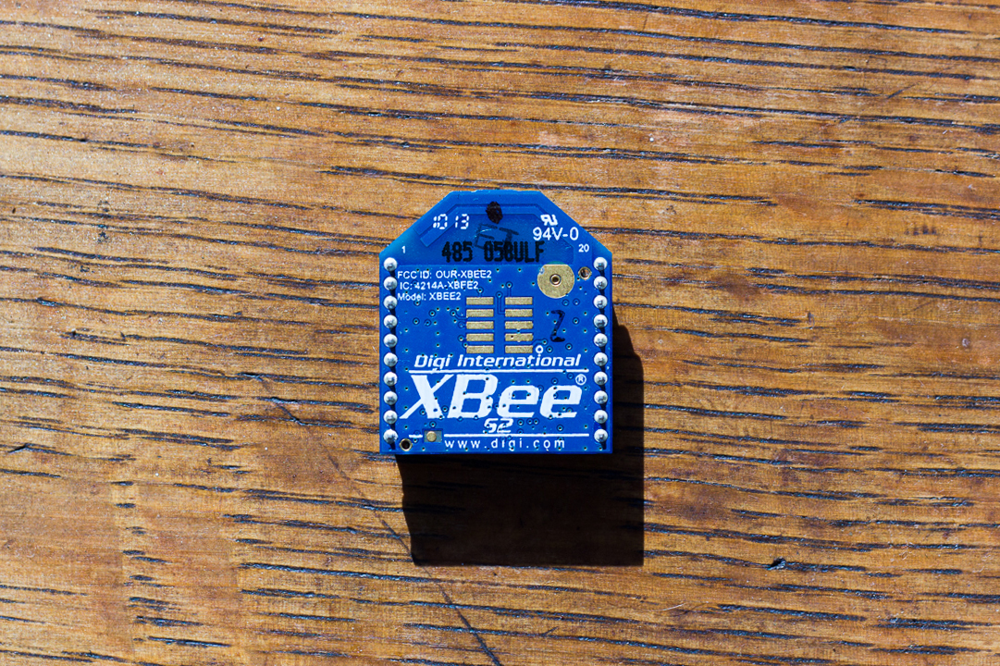

Getting Started with SimpleZigBee
for Arduino & XBee
SimpleZigBee is an easy-to-use Arduino library for communicating with XBee Series 2 and 2B ZigBee radios. The library implements the most popular XBee API frame types (TX, RX, AT Command, etc.) and makes it easy to add a wireless communication network to your Arduino project. This 3 part tutorial covers the basics of using the library to send and receive messages.

If you are looking to learn about ZigBee, wireless networks, or serial communication in general, I highly recommend the book Building Wireless Sensor Networks by Robert Faludi. This book is how I first learned about the ZigBee wireless networking protocol, serial communication with hexadecimals, and how to use XBee radios to create distributed sensor systems. Consequently, you may find that the SimpleZigBee library is complementary to Faludi's book. Once you understand the basics of working with an XBee and the ZigBee protocol, the SimpleZigBee library will make it easy to implement your project.
Getting Started: Part 1
In this tutorial, you will need 2 Arduinos, 2 XBee S2 radios, and 2 XBee Explorer boards. You will also need 1 XBee USB Explorer board for updating the firmware and changing the settings of each XBee. Lastly, you can download the SimpleZigBee library from GitHub and add the library to you Arduino IDE (Sketch->Include Library->Add .ZIP Library).
In this example, we will program 2 XBee radios using the X-CTU software, which can be downloaded for free from Digi. One XBee will be the network coordinator and the other, a network router. Then, we will connect each XBee to an Arduino and upload the Getting Started, Part 1 sketches. Once complete, the Arduino with the Router will send a message (containing an integer value in the payload) to the Coordinator once every 5 seconds and the Arduino with the Coordinator will print the message to the hardware serial port, allowing us to view the contents using the Arduino IDE Serial Monitor.
Upload the XBee Firmware
Using the X-CTU software and XBee USB Explorer, upload the correct firmware to each XBee. One XBee should have Coordinator API firmware and the other, Router API firmware. For both radios, either leave the PAN ID setting as 0 (and a PAN ID will automatically be set) or choose a simple PAN ID (like 1, 100, or 2020) . Both XBees must have the same PAN ID. Lastly, for both radios, make sure the API Mode is set to 2 (AP=2). This is a requirement of the SimpleZigBee library.
Coordinator Setup
Select the Arduino that will be connected to the XBee Coordinator. In this example, the Arduino will connect to the XBee using a Software Serial port. This allows the Hardware Serial port to remain free, making it easier to reprogram the Arduino and to debug the code. Begin by connecting the XBee. Connect DOUT to Pin 10 (RX) and DIN to Pin 11 (TX), as shown below. Also, connect the XBee to 5V and ground (GND).

Next, upload the example sketch GettingStarted_Part1_Coordinator.ino to the Arduino and open the Arduino IDE's Serial Monitor. Read through the commented code to understand what is being displayed in the serial monitor (though very little will occur until you complete the Router setup below).
Router Setup
Connect the second Arduino to the XBee Router, as done in Part 1. Again, the Arduino will connect to the XBee using a Software Serial port. Next, upload the example sketch GettingStarted_Part1_Router.ino to the Arduino and open the Arduino IDE's Serial Monitor. As soon as the sketch is uploaded, the XBees should begin communicating. Read through the commented code to understand what is being displayed in the serial monitor. When a packet is successfully sent from one XBee to another, the RSSI LED on the XBee Explorer board will turn on for a second or so (depending on the signal strength). If you are having trouble getting the Router to connect to the Coordinator, you can try sending the command to leave the current network and then wait for the Router to reconnect (uncomment last 4 lines of setup function).
Coordinator Code Walkthrough
In this section, we will walk through the GettingStarted_Part1_Coordinator.ino example code and explain the role of the SimpleZigBee library. To begin, take a look at the top of the sketch.
#include <SimpleZigBeeRadio.h>
#include <SoftwareSerial.h>
// Create the XBee object ...
SimpleZigBeeRadio xbee = SimpleZigBeeRadio();
// ... and the software serial port. Note: Only one
// SoftwareSerial object can receive data at a time.
SoftwareSerial xbeeSerial(10, 11); // (RX=>DOUT, TX=>DIN)
The SimpleZigBee library actually includes 3 separate libraries: SimpleZigBeeRadio, SimpleZigBeePacket, and SimpleZigBeeAddress. By including the SimpleZigBeeRadio library in the sketch, the SimpleZigBeePacket and SimpleZigBeeAddress libraries are automatically added as well. The xbee object is an instance of the SimpleZigBeeRadio class. Every instance of SimpleZigBeeRadio includes, as object parameters, two instances of the SimpleZigBeePacket class, one for storing the last incoming message and one for preparing an outgoing message. This makes it very easy to respond to the last sender with a minimal amount of code. Lastly, as stated above, we are communicating with the XBee via a software serial port using digital pins 10 and 11.
Next, we will take a look at the setup function.
void setup() {
// Start the serial ports ...
Serial.begin( 9600 );
while( !Serial ){;} // Wait for serial port (for Leonardo only).
xbeeSerial.begin( 9600 );
// ... and set the serial port for the XBee radio.
xbee.setSerial( xbeeSerial );
// Set a non-zero frame id to receive Status and Response packets.
xbee.setAcknowledgement(true);
}
In the setup function, we call the begin method for the hardware serial port object, Serial, and the software serial port object, xbeeSerial. Next, we tell the xbee object which serial port the XBee radio is connected to by calling the setSerial method and passing in the xbeeSerial object. If the XBee radio was connected to digital pins 0 and 1, we would pass in the Serial object instead. Lastly, we call the setAchnowledgement method and pass in true. This tells the xbee object to use non-zero frame ids when sending out messages, which will in turn tell the receiving XBee radio to send Status packets to acknowledge the successful reception of a message. If we pass in false, the xbee object will set the frame id of every outgoing message to 0 and thus no Status packets will be sent back.
Now take a look at the loop function.
void loop() {
// If data is waiting in the XBee serial port ...
if( xbee.available() ){
// ... read the data.
xbee.read();
// If a complete message is available, display the contents
if( xbee.isComplete() ){
Serial.print("\nIncoming Message: ");
printPacket( xbee.getIncomingPacketObject() );
}
}
delay(10); // Small delay for stability
}
The available method checks the buffer of the serial port (in this case, xbeeSerial) and returns the number of incoming bytes. The read method reads the bytes from the serial port and stores them in the xbee object's incoming packet object. As the xbee object reads the incoming message, it will automatically determine if the message has been completely received. This can be checked using the isComplete method. Note that because the isComplete if statement is within the available while loop, an incoming message will never be printed more than once. After a message has been completely received and printed, we will only reenter the available while loop when another message arrives. In this case, the previous message will be erased to make room for the new message. Lastly, while the SimpleZigBeeRadio class includes methods for getting the contents of the incoming packet object, in this example we call the getIncomingPacketObject method to retrieve the object directly.
Finally, we will look at the printPacket function.
void printPacket(SimpleZigBeePacket & p){
Serial.print( START, HEX );
Serial.print(' ');
Serial.print( p.getLengthMSB(), HEX );
Serial.print(' ');
Serial.print( p.getLengthLSB(), HEX );
Serial.print(' ');
// Frame Type and Frame ID are stored in Frame Data
uint8_t checksum = 0;
for( int i=0; i < p.getFrameLength(); i++){
Serial.print( p.getFrameData(i), HEX );
Serial.print(' ');
checksum += p.getFrameData(i);
}
// Calculate checksum based on summation of frame bytes
checksum = 0xff - checksum;
Serial.print(checksum, HEX );
Serial.println();
}
The printPacket function prints the contents of an SimpleZigBeePacket instance as a hexadecimal string. The getLengthMSB and getLengthLSB methods retrieve the most and least significant bytes, respectively, of the packet's length. The frame data consists of the bytes between the packet length LSB and the packet checksum. The getFrameLength method retrieves the number of frame data bytes and getFrameData, the specific byte. The checksum is the final byte in a packet and is used to verify that a message is complete. The checksum is calculated as shown in the printPacket function.
Router Code Walkthrough
In this section, we will walk through the GettingStarted_Part1_Router.ino example code and explain the role of the SimpleZigBee library. In the example, the Arduino with the Router sends an integer value to the Arduino with the Coordinator once every 5 seconds. To begin, take a look at the top of the sketch.
#include <SimpleZigBeeRadio.h>
#include <SoftwareSerial.h>
// Create the XBee object ...
SimpleZigBeeRadio xbee = SimpleZigBeeRadio();
// ... and the software serial port. Note: Only one
// SoftwareSerial object can receive data at a time.
SoftwareSerial xbeeSerial(10, 11); // (RX=>DOUT, TX=>DIN)
// Packet to send: In this example, we will update
// the contents of a packet before sending it.
SimpleZigBeePacket zbp = SimpleZigBeePacket();
// Value and payload to be sent
int val = 0;
// Variables to store time
unsigned long time = 0;
unsigned long last_sent = 0;
As before, we begin by including the SimpleZigBeeRadio and SoftwareSerial libraries and then creating the xbee and xbeeSerial objects. In this example, rather than using the packet object within the xbee object to send a message, we will create the zbp object, an instance of the SimpleZigBeePacket class. We will update the contents of zbp somewhat manually before sending the packet. Next, we have an integer, val, which will serve as the payload of each outgoing message, and 2 longs, time and last_sent, to help us send a message once every 5 seconds.
Next, we will look at the setup function.
void setup() {
// Start the serial ports ...
Serial.begin( 9600 );
while( !Serial ){;}// Wait for serial port (for Leonardo only).
xbeeSerial.begin( 9600 );
// ... and set the serial port for the XBee radio.
xbee.setSerial( xbeeSerial );
// Receive TX Status packets
xbee.setAcknowledgement(true);
// The frame data in a ZigBee packet refers to the data between
// the length LSB and the checksum.
uint8_t exFrame[] = { 0x10,0x01,0x00,0x00,0x00,0x00,0x00,0x00,0x00,0x00,0xff,0xfe,0x00,0x00,0xff,0xff };
// Now store the example frame in the packet object.
zbp.setFrameData(0, exFrame, sizeof(exFrame));
}
As before, we begin the serial ports, set the xbee serial port as xbeeSerial, and set xbee to request acknowledgement of outgoing packets. Next, we define a byte array containing the frame data of a ZigBee packet. Note, the frame data in a ZigBee packet refers to the bytes between the length LSB and the checksum. By calling setFrameData, we use the array to populate the contents of the zbp packet object starting at index 0 of the frame data. As specified by the array, the frame data includes:
- Frame type: 0x10 (ZigBee Transmit Request)
- Frame id: 0x01
- 64-bit destination address: 0x0000000000000000 (Coordinator address)
- 16-bit destination address: 0xfffe (unknown or broadcast)
- Broadcast radius: 0x00 (unlimited hops)
- Options = 0x00 (default)
- Payload data = 0xff, 0xff (2 payload bytes)
If you are having trouble getting the Router to connect to the Coordinator, you can uncomment the following lines of code in the setup function. The Arduino will then send the AT command to leave the current network ( CB4) and wait 1 seconds for the Router to reconnect.
Serial.println( "Send command to leave network (CB4)" );
xbee.prepareATCommand('CB',4);
xbee.send();
delay(10000);
Next, we will look at the loop function.
void loop() {
// While data is waiting in the XBee serial port ...
while( xbee.available() ){
// ... read the data.
xbee.read();
// If a complete message is available and it
// has not been read yet, read it.
if( xbee.isComplete() ){
// Print the contents of the incoming packet
Serial.print("\nIncoming Message: ");
printPacket( xbee.getIncomingPacketObject() );
}
}
// The Arduino will send a packet to the XBee once every 5 seconds.
time = millis();
if( time > (last_sent+5000) ){
last_sent = time; // Update the last_sent variable
// Update the payload (in this case, the last 2 bytes of the frame)
// The rest of the frame (address, etc) does not need to be changed.
zbp.setFrameData( zbp.getFrameLength()-2, val >> 8 & 0xff );
zbp.setFrameData( zbp.getFrameLength()-1, val & 0xff );
Serial.print("\nSend Message: ");
printPacket( zbp );
// Send the packet. This example does not use the outgoing packet
// object contained in the SimpleZigBeeRadio class.
xbee.send( zbp );
val = (val + 10)%500; // Increase val by 10 (start over at 500)
}
delay(10); // Small delay for stability
// That's it! The router is ready to go.
}
The loop function begins with code to read and print any incoming messages, just as with the Arduino with the Coordinator. Below this, we have code to send the ZigBee packet contained in zbp once every 5 seconds (5000 milliseconds). Before sending the packet, we update the payload (in this example, the last 2 bytes of the frame data). Because, in Arduino, an integer contains 2 bytes, we must break the integer val into 2 bytes using the bitshift left (>>) and bitwise and (&) operators and store the bytes in the the zbp object using setFrameData. Finally, we display the packet using printPacket, send the packet from the Arduino to the XBee using send, and update the val integer.